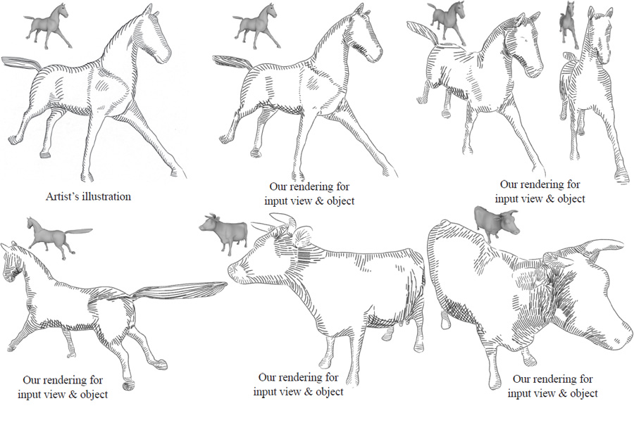
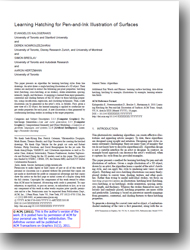

Learning Hatching for Pen-and-Ink Illustration of Surfaces
People
Abstract
This paper presents an algorithm for learning hatching styles from line drawings. An artist draws a single hatching illustration of a 3D object. Their strokes are analyzed to extract the following per-pixel properties: hatching level (hatching, cross-hatching, or no strokes), stroke orientation, spacing, intensity, length, and thickness. A mapping is learned from input geometric, contextual and shading features of the 3D object to these hatching properties, using classification, regression, and clustering techniques. Then, a new illustration can be generated in the artist’s style, as follows. First, given a new view of a 3D object, the learned mapping is applied to synthesize target stroke properties for each pixel. A new illustration is then generated by synthesizing hatching strokes according to the target properties.

Paper
MLHatching.pdf, 5MBCitation
Evangelos Kalogerakis, Derek Nowrouzezahrai, Simon Breslav, Aaron Hertzmann, "Learning Hatching for Pen-and-Ink Illustration of Surfaces",
ACM Transactions on Graphics, Vol. 31, No. 1, 2012
Bibtex
Presentation
Here is the Siggraph 2012 presentation of the paper.
PDF version, 3MB
Acknowledgements
We thank Seok-Hyung Bae, Patrick Coleman, Vikramaditya Dasgupta, Mark Hazen, Thomas Hendry, and Olga Vesselova for creating the hatched drawings. We thank Olga Veksler for the graph cut code and Robert Kalnins, Philip Davidson, and David Bourguignon for the jot code. We thank Aim@Shape, VAKHUN, and Cyberware repositories as well as Xiaobai Chen, Aleksey Golovinskiy, Thomas Funkhouser, Andrea Tagliasacchi and Richard Zhang for the 3D models used in this paper. This project was funded by NSERC, CIFAR, CFI, the Ontario MRI, and KAUST Global Collaborative Research.